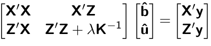

Decoding mixed model equations
High-throughput Phenotyping Driven Quantitative Genetics @CMA-FCT-NOVA
Background
This is the day 1 computer lab session for quantitative genetic analysis. The goal of this exercise is to set up mixed model equations (MME) and obtain solutions for best linear unbiased estimator (BLUE) and best linear unbiased prediction (BLUP).
Data
We are going to use the australia.soybean data included in the agridat package. This dataset contains multi-environment trial of soybean in Australia for 58 varieties.
# install.packages("agridat") if not installed yet
library(agridat)
data(australia.soybean, package = 'agridat')
?australia.soybean
head(australia.soybean)We will use env , gen, and yield columns in the current analysis. We can see that there are eight environments, each having 58 observatios. Also, each genotype is replicated eight times (one per environment).
dat <- australia.soybean[, c(1, 4, 5)]
dim(dat)
head(dat)
table(dat$env)
table(dat$gen)
table(dat$env, dat$gen)The BLUP model we would like to set up is \[ \text{yield} = \text{Intercept} + \text{Environment} + \text{Genotype} + \text{Residual} \] We can rewrite this as \[ \mathbf{y} = \mathbf{Xb} + \mathbf{Zu} + \boldsymbol{\epsilon} \]
We will first create the variable y including a vector of yields.
y <- dat$yieldWe will now proceed to set up incident matrices. The incidence matrix X can be easily created using the model.matrix function.
X <- model.matrix(~ + env, dat)
head(X)
head(dat)
tail(X)
tail(dat)We will use the model.matrix function again to create the Z matrix.
Z <- model.matrix(~ -1 + gen, dat)
head(Z)
head(dat)
tail(Z)
tail(dat)We assume the following distribution. \[ \mathbf{u} \sim N(0, \mathbf{I}\sigma^2_u), \text{ where } \sigma^2_u = 0.1990775 \] \[ \boldsymbol{\epsilon} \sim N(0, \mathbf{I}\sigma^2_{\epsilon}), \text{ where } \sigma^2_e = 0.2508898\\ \]
sigma2u <- 0.1990775
sigma2e <- 0.2508898We wil now start building the elements of MME. Recall that MME is given by 
X’X
Creatig the X’X matrix.
XtX <- t(X) %*% X
XtX X’Z
Creating the X’Z matrix.
XtZ <- t(X) %*% Z
XtZ Z’X
Creating the Z’X matrix.
ZtX <- t(Z) %*% X
ZtXZ’Z
Creating the Z’Z matrix.
ZtZ <- t(Z) %*% Z
ZtZRatio of variance components
I <- diag(ncol(Z)) # assuming K = I
lambda <- sigma2e / sigma2u X’y
Creating the X’y matrix.
Xty <- t(X) %*% y
Xty
sum(y)Z’y
Creating the Z’y matrix.
Zty <- t(Z) %*% y
ZtyBuilding LHS and RHS
LHS1 <- cbind(XtX, XtZ)
LHS2 <- cbind(ZtX, ZtZ + I*lambda)
LHS <- rbind(LHS1, LHS2)
RHS <- rbind(Xty, Zty)Solving for solutions
sol <- solve(LHS, RHS)
# BLUE
sol[1:8, ]
# BLUP
sol[9:15, ]lme4 R package
We can confirm our resutls using the lme4 R package.
# install.packages("lme4")
library(lme4)
fit = lmer(yield ~ env + (1 | gen), data=dat)
fit@beta
rowMeans(ranef(fit)$gen)
rowMeans(ranef(fit)$gen)[1:7]The variance components can also be obtained.
data.frame((summary(fit))$varcor)$vcovRecall that the broad-sense heritability is defined as \[ H^2 = \frac{\sigma^2_u}{ \sigma^2_u + \sigma^2_{\epsilon}/\text{rep}}. \]
Thus, the estimate of \(H^2\) in this population is
sigma2u / (sigma2u + sigma2e/8)